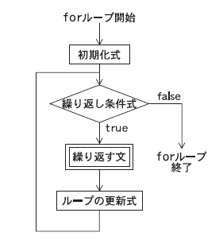
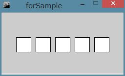

プログラムの処理の流れの制御
条件分岐:if-else文
if-else文は、条件に従って処理を選択的に実行する場合に使います。条件は、 関係演算子・論理演算子 を使った式、式の値が真trueまたは偽falseとなる式を書きます。
◆書き方１
if (条件式){
文;
文;
}
|
◆書き方２
if (条件式){
文;
文;
} else {
文;
文;
}
|
◆書き方３
if (条件式1){
文1;
} else if (条件式2){
文2
} else if (条件式3){
文3;
}
……
} else {
文n;
}
|
ifに続く( )の中の条件式の値が真（true）ならば、後ろのブロック(中括弧｛ ｝で囲まれた部分)内の文を実行します。条件式の値が僞(false)の場合は、if文の次の処理に移ります。
【書き方２】
ifの条件式の値が偽の場合の処理は、else文を使って記述します。
【書き方３】
処理を3つ以上に分岐する時は、else if文を組み合わせます。条件式1が真の場合文1を実行し、僞の場合条件式2の判定をします。条件式2が真なら文2を実行し、僞の場合は条件式3の判定に移ります。このように指定された条件式を次々と判定していき、そのどれも真ではない場合最後のelseで指定された文nを実行します。
関係演算子
関係演算子は、2つの値を比較して、その間の関係を調べ、その結果がtrueかfalseとなる演算子です。trueは真を、falseは偽を表す特別なデータ型で booleanと呼ばれます。 関係演算子を使った演算は、分岐や繰り返し制御を行う際の条件に使われます。
| 演算子 | 使い方 | 結果がtrueとなる条件 |
| > | op1 > op2 | op1がop2より大きい時 |
| >= | op1 >= op2 | op1がop2以上の時 |
| < | op1 < op2 | op1がop2より小さい時 |
| <= | op1 <= op2 | op1がop2以下の時 |
| == | op1 == op2 | op1がop2と等しい時 |
| != | op1 != op2 | op1がop2と等しくない時 |
| && | op1 && op2 | op1とop2の両方がtrueの時。「かつ」に相当。 |
| || | op1 || op2 | op1とop2のどちらかがtrueの時。「または」に相当する 。 |
下の例は、変数aの値が10以上なら赤色で、そうでないなら黒色で円を描きます。 （変数aには、マウスのx座標を位置を代入しておきます。）
int a = mouseX;
if(a >= 10){
fill(255,0,0);
}else {
fill(0);
}
ellipse(width/2, y, 20, 20);
論理演算子
関係演算子は2つの値の関係を調べる演算子ですが、1つの関係だけでなく、複数の関係から真偽値を得たい場合に、論理演算子 && あるいは || を使います。例えば、「xがyより大きく、かつaがbと等しい場合」といった条件を調べたい時には、論理演算子を使って2つの関係演算をつなぎ、次のように書きます「x>y && a==b」。
| && | op1 && op2 | op1とop2の両方がtrueの時。「かつ(AND)」に相当。 |
| || | op1 || op2 | op1とop2のどちらかがtrueの時。「または(OR)」に相当。 |
| ! | !op | opがtrueの時false,opがfalseの時trueになる。「否定(NOT)」に相当。 |
下の例は、変数aの値が0以上100以下なら円を、100より大きく200以下なら四角形を、そうでないなら、三角形を描きます。
int a = mouseX；
if(a >= 0 && a <= 100){ //aが0以上100以下かどうかを調べ、trueなら次を実行
ellipse(50, 50, 100, 100);
}else if(a>100 && a<=200){ //aが100より大きく200以下かどうかを調べ、trueなら次を実行
rect(50, 50, 100, 100);
}else { //上の条件のいずれでもない時は、次を実行
triangle(30, 75, 58, 20, 86, 75)；
}
繰返し：for文
条件が満たされている間、ある処理を繰返し実行したいときに使います。

for ( 初期化式; 繰返し条件式; 更新式 ) {
繰返す文;
}
|

「5個の正方形を横に並べて描く」処理をfor文を使って書くと、下のようになります。iの値を0から始め、正方形をひとつ描くごとにiに1ずつ加え、iが5になった時、i<5の式の値がfalseになり、繰返しを終えます。最初の正方形の座標は(30＋0, 50)で、順にx座標が40ずつ増え、5個の正方形が横に並びます。
int a = 30;
for(int i=0; i<5; i=i+1){
rect(a+i*40, 50, 30, 30);
}
i=i+1は、算術演算子++を使って、i++と書いても同じです。
繰返し：while文
条件が満たされている間、ある処理を繰返し実行します。
while (条件式){
文;
文;
}
|
例えば、for文のサンプルと同じ「5個の正方形を横に並べて描く」処理をwhileを使って書くと、次のようになります。
int a = 30;
int i=0;
while(i<5){
rect(a+i*40, 50, 30, 30);
i= i+1;
}
繰返しの条件式に直接trueを指定すると、無条件に繰り返すことを意味します(これを無限ループと言います)。無限ループを使う場合は、ブロックの中で、if文で条件判定をし、何らかの条件が満たされたらループから抜けるようにします。ループから抜けるにはbreak();と書きます。